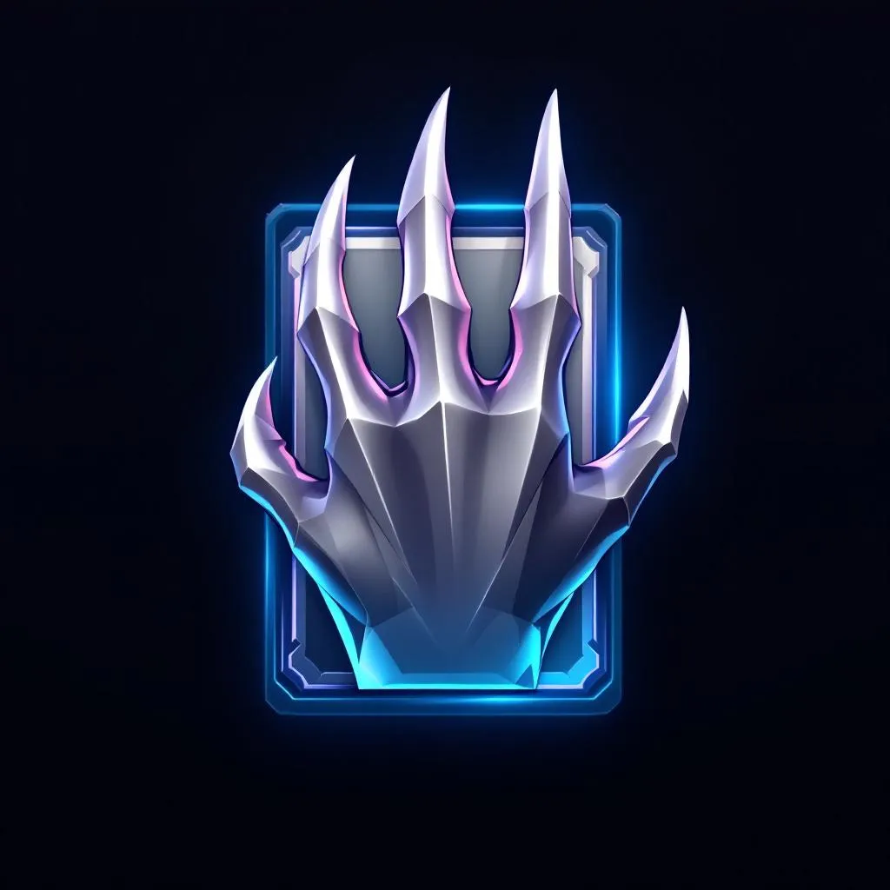

9 source-specialist agents price graded collectibles across every major venue. They remember, coordinate, and publish verifiable evidence — all on Walrus.
You take the number on faith. There's no way to verify how a price was computed, what was excluded, or who benefits from the answer.
Anyone can trade YES/NO on whether a card exceeds a strike price by expiry. To settle, the market needs a real price — not a feed, but a swarm of agents that read every major venue, remember each card's history, and publish evidence on Walrus so anyone can verify.
| Agent | Data type | Signal |
|---|---|---|
| eBay | Grade-matched sold comps + active listings | Highest-signal raw comp |
| PriceCharting | Scraped sold history (230+ comps/card) | Deep historical anchor |
| Courtyard | Tokenized vault FMV (Base chain) | Onchain fair market value |
| TCGPlayer | Active graded listings | Retail ask-side signal |
| ALT.xyz | Sold transactions + VALUE point | Index-derived market value |
| Cardmarket | EU marketplace listings | Cross-Atlantic spread |
| Beezie | OpenSea / Base chain tokenized | Tokenized secondary |
| Collector Crypt | MagicEden (Solana) | Solana-side tokenized |
| Goldin | Realized auction hammer prices | Auction floor truth |
Each agent: fetch → filter → self-score confidence → circuit breakers → write to MemWal. ~2,100 lines of swarm + coordinator code.
{
"type": "memwal-snapshot",
"fileCount": 78,
"files": [
"agents/ebay/cards/jp-vs-091.json",
"agents/alt/cards/neo1-1st-18.json",
"shared/reputation/weights.json",
"shared/consensus/history/…",
…
]
}
Reject zero-price, flag >5× jumps, stale feeds >14d, >60% single-seller concentration.
Modified Z-score (threshold 3.5) drops signals that diverge from the robust median.
Weight = confidence × reliability × recency. A wash trade can't outvote the crowd.
Won't settle under 3 sources. UMA-style bonded dispute window. Wide disagreement → oracle declines.
Spoofing one source costs ~$6K in marketplace fees and gets MAD-rejected. Coordinating 4+ sources costs $23K+ and still gets caught by reputation + drift detection.
Each consensus round emits an evidence bundle — price, every comp, per-source weights, rejected outliers, the aggregation method — and stores it on Walrus. The blob ID is referenced onchain. A market cannot settle without it.
Anyone pulls the blob and re-runs the math. The oracle is auditable by construction.
{
"cardId": "jp-vs-091",
"consensusPriceCents": 1512000,
"confidence": [1437000, 1588000],
"contributingSources": [
{ "ebay": 0.28, "pricecharting": 0.24,
"courtyard": 0.18, "alt": 0.15, … }
],
"rejectedSources": [
{ "reason": "MAD outlier (z=4.10)" }
],
"aggregationMethod":
"confidence_weighted_median",
"minSources": 3
}
| Component | Status |
|---|---|
| Move contracts — market · oracle · registry · test_usd on Sui testnet | deployed |
| 4 PSA-10 markets seeded with positions (Umbreon · Typhlosion · Dark Raichu · Flareon) | live |
| React dapp — faucet tUSD, trade YES/NO, dispute flow, oracle chart | working |
| Oracle swarm — 9 agents + coordinator + reputation EMA + PII redaction | running |
| Walrus evidence — every resolution carries a verifiable evidence_blob_id onchain; markets cannot settle without it | verified |
| MemWal persistence — full agent memory snapshots to Walrus; cold-start restore from any blob | proven |
Package 0x66debb86… · Live proof: market object ↗ carries evidence blob ↗
Flareon market ships in a disputed state so judges can walk the full resolution path live. · Open the dapp →
The prediction market proves the oracle works. The oracle is the lasting thing: a memory-backed agent swarm that turns scattered, gameable price signals into a public valuation commons on Walrus. It starts with cards. It extends to watches, sneakers, wine — any graded or authenticated real-world asset.
Don't trust the oracle — verify the blob.